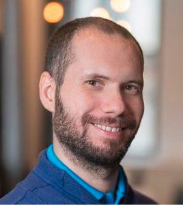

Hello!
I am Francisco Villaescusa-Navarro, mostly known as Paco. I am a research scientist at the Center for Computational Astrophysics of the Flatiron Institute in New York City, and a visiting research scholar at Princeton University. Before joining Flatiron as a research scientist in 2021, I did my Ph.D. at the Instituto de Física Corpuscular in Valencia, Spain, and was a postdoctoral researcher at the Astronomical Observatory of Trieste, a Flatiron Research Fellow, and an associate research scholar at Princeton University.
I am a cosmologist working at the intersection of numerical simulations and artificial intelligence. My goal is to learn about fundamental physics (the components, laws and initial conditions of the Universe) from cosmological observations. To do so, I lead the development of large suites of state-of-the-art simulations designed to train machine learning models, and I develop machine learning methods to extract as much information as possible from cosmic surveys while accounting for uncertain astrophysical processes. More recently, I have been developing AI agents designed to act as research partners across scientific disciplines. I have also worked on neutrino masses, 21cm intensity mapping, the Lyman-α forest, modified gravity, BAO reconstruction, the kSZ effect, and galaxy formation.
I am the main architect of the Quijote simulations, co-lead the CAMELS project, am part of the founding team of DREAMS, and develop the Pylians libraries (see Projects below). I am also one of the PIs of the Learning the Universe collaboration, and a member of the HIRAX (Hydrogen Intensity and Real-time Analysis eXperiment) collaboration.
I am one of the primary developers of the Denario project, a complex AI multi-agent system designed for scientific discovery. Denario can generate ideas, check literature, develop research plans, write and execute code, and write and review papers. I'm currently working with a large team of scientists from various fields, including astrophysics, biology, biophysics, chemistry, material science, neuroscience, planetary science, and quantum physics, as well as experts in machine learning, mathematics, and philosophy. Together, we are pushing the boundaries of what large-language models (LLMs) can achieve in scientific research.
Projects
 Quijote
88,000 N-body simulations to quantify the information content of cosmological observables and train machine learning models.
Quijote
88,000 N-body simulations to quantify the information content of cosmological observables and train machine learning models.
 CAMELS
More than 17,000 hydrodynamic and N-body simulations to train machine learning models in cosmology and astrophysics.
CAMELS
More than 17,000 hydrodynamic and N-body simulations to train machine learning models in cosmology and astrophysics.
 DREAMS
Simulations of cosmological volumes, Milky Way-like galaxies and dwarf galaxies to shed light on the nature of dark matter with AI.
DREAMS
Simulations of cosmological volumes, Milky Way-like galaxies and dwarf galaxies to shed light on the nature of dark matter with AI.
 Denario
An open-source, multi-agent AI research assistant that helps scientists across disciplines.
Denario
An open-source, multi-agent AI research assistant that helps scientists across disciplines.
 Pylians
Python libraries to analyze numerical simulations: power spectra, bispectra, density fields and more.
Pylians
Python libraries to analyze numerical simulations: power spectra, bispectra, density fields and more.